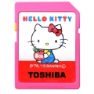

Hello Kitty是现今世界上影响力最广的动画形象之一，诞生于1974年的它在全球都拥有大量的拥趸，老少咸宜都对这只可爱的动画猫喜爱非常，时至2014年，创立于1875年的东芝集团迎来了139周年，Hello Kitty为也东芝周年献上大礼，携手推出了东芝Hello Kitty限定版SDHC闪存卡。除了拥有极其抢眼的外观设计，更拥有不俗的性能表现。Class 10速度等级，支持1080P全高清视频摄影。高达30MB/s的传输速度也能让用户在拷贝照片、视频时更快更有效率。